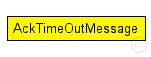

This documentation is released under the Creative Commons license
This documentation is released under the Creative Commons license(no description)
The following diagram shows usage relationships between types. Unresolved types are missing from the diagram.
The following diagram shows inheritance relationships for this type. Unresolved types are missing from the diagram.
| Name | Type | Description |
|---|---|---|
| wsmId | unsigned long |
The corresponding WSM's tree id |
| ac | int |
Access category on which the AckTimer is set |
message AckTimeOutMessage { // The corresponding WSM's tree id unsigned long wsmId = -1; // Access category on which the AckTimer is set int ac = -1; }
This documentation is released under the Creative Commons license